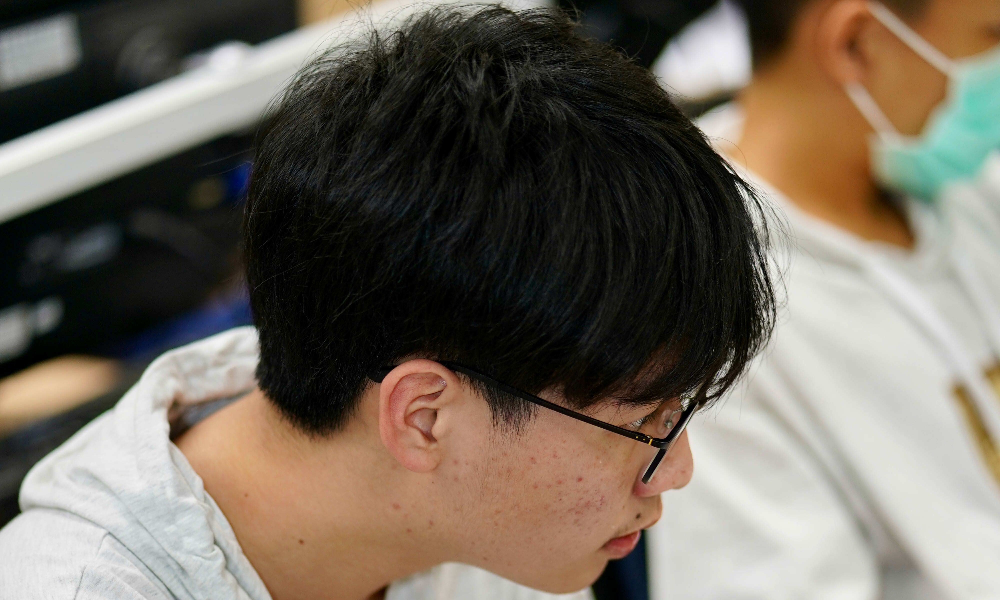

崔浩堂
我是崔浩堂 在108年用特殊選材錄取交大電機系
本來沒打算做關於我們
但因為看皮膚科排隊太久 所以決定做了一下
有問題可以問我喔>< IG:henry.0408
我們是一群來自建功高中的109級畢業校友
對架設網站有興趣， 因此建構了這個平台
希望有幫助到使用者們
我是崔浩堂 在108年用特殊選材錄取交大電機系
本來沒打算做關於我們
但因為看皮膚科排隊太久 所以決定做了一下
我是張煥旻，在109年透過繁星推薦錄取清大工程與系統科學系(甲組)，
因為很喜歡這個學校，所以花了點時間幫忙做這個企劃。
我的經歷有：10th學生會文書/校排1%/學測理組57級(總級70級)，
有問題的人都可以聯絡我喔！ howie_chang1216
howie_chang1216

我是江佳臻，109學年錄取清華大學電機資訊學士班，因為被邀請所以就來幫忙了XD
IG : selina_zebra

我是柯詠翔，繁星錄取交通大學管理科學系。在這裡六年所以想要宣傳建功，讓更多人知道
我是劉哲維,經由繁星錄取中興大學生命科學系後,想幫忙宣傳建功所以加入了這個團隊.